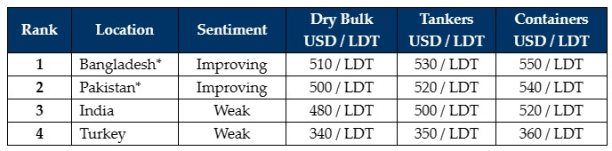

inWeekly Demolition Reports29/01/2024

Ongoing geopolitical events and the recently unfolding conflict in the Middle East have certainlymanaged to keep global trading lanes busier and the freight markets unseasonably high, all at a time when many had been expecting the Dry Bulk & Container sectors to cool off as the industry approaches the traditionally quieter Chinese New Year holidays early next month.
Moreover, as ship recycling sentiments & vessel prices started to inch up in both Pakistan & Bangladesh over the last several weeks, sub-continent recycling markets finally seemed poised to be gathering some much-needed steam. Unfortunately for both destinations, apart from the steady stream of HKC only MSC containers that have been committed (4 in 4 weeks in 2024 thus far) to a limited number of pre-approved Alang yards, the ever-persistent hope for an increase in the supply of tonnage has yet to manifest itself in the ship recycling world.
Meanwhile, pursuant to Bangladesh officially ratifying the Hong Kong Convention last year, reportedly this week, further news emanated via the announcement that the Norwegian Government is pledging US$ 1.364 million, in order to further help upgrade and transform Bangladeshi ship recycling yards into environmentally friendly recycling facilities that are increasingly operating in line with the requirements of the HKC. As such, in addition to the investments and commitments already made by the government of Japan and the Japanese Shipowner’s Association (JSA) towards the upgrade of ship recycling facilities in Bangladesh last year, this week’s announcement is further good news to a market that has, of late, been increasingly reaching for better and more sustainable standards for the end of life needs of the global fleet.
Overall, in the absence of any meaningful tonnage, Indian sub-continent ship recycling markets are trudging on week after week and this week remained no different, with local steel plate prices barely moving and currencies that relatively unchanged – it certainly was a modestly quiet week in the sub-continent recycling markets. Finally, Turkey remains stranded and invisible in the far West, with no movement in steel plate prices and / or local activity, all while the Lira remains unable to find solid footing against the U.S. Dollar and continues to slip every week and without fail.
For week 4 of 2024, GMS demo rankings / pricing for the week are as below.

📄 Download PDF: Ship-recycling-market-insight-week-04-2024-2024-Looking-Up.pdfSource: GMS,Inc. ,https://www.gmsinc.net/gms_new/index.php/web